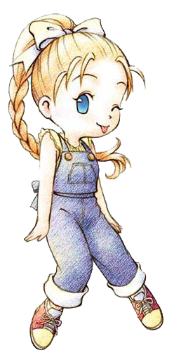
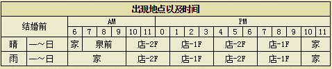

琳

总是精神饱满的旅馆的女孩子。好胜心很强，可是对自己的魅力没有信心，恋爱观比较消极。 另外非常喜欢做料理也非常喜欢吃。
基本资料
生日：夏季17(22日) 住址：达特的店 喜欢的东西：干酪、松蘑饭、蛋糕、热蛋糕 人际关系：达特的女儿 竞争对手：克里夫
※每天到旅馆（达特的店）买一样东西吃（免费的水不算），每持续15天爱情度加2500。
基本行程

喜欢与讨厌的东西
注：特别喜欢：爱情度+800 很喜欢：爱情度+500 喜欢：爱情度+300 普通：爱情度+100 讨厌：爱情度-500 非常讨厌：爱情度-800
特别喜欢
- 太好了！！我可以收下吗？谢谢。 干酪、松蘑饭、蛋糕、热蛋糕
很喜欢
- 我可以收下吗？哇！太好了！谢谢。 温泉蛋、巧克力、年糕、沙拉、咖喱饭、炖品、炒青菜、炒饭、锅烙、三文治、草莓牛奶、南瓜布丁、烤地瓜、菜肉蛋卷、蛋炒饭、布丁、奶酪蛋糕、苹果派、竹笋饭、蘑菇饭、寿司、咖喱面包、天麸锣盖浇饭、乌冬烧、荞面条、天麸罗面、烤年糕、冰激淋、巧克力蛋糕、钻石、粉红钻石
喜欢
- 谢谢，我很高兴！ 草莓、番茄、菠萝、野葡萄、苹果、蛋（一般、高品质、特级、金、P、X）、蛋黄酱（S、M、L、G、P、X）、牛奶（S、M、L、G、P、X）、奶酪（S、M、L、G、P、X）、葡萄汁、肉丸粉、饭团、面包、荞麦粉、ＳＵＧＤＷ苹果、ＨＭＳＧＢ苹果、ＡＥＰＦＥ苹果、腌黄瓜、味噌汤、果汁、菜汁、菜奶、调和汁、混合奶、腌萝卜、烤马铃薯、草莓酱、番茄汁、爆米花、玉米片、菠萝汁、酱烤茄子、地瓜布丁、凉拌青菜、炒鸡蛋、煮鸡蛋、苹果烧、果酱面包、奶油烤面包、葡萄面包、土司、法国土司、鱼片、什锦寿司、比萨、乌冬、咖喱乌冬、干烧伊面、烫荞面、天麸罗、筑前煮、烤饭团、粥、天麸罗饭、鸡蛋饭、大学芋、曲奇、巧克力曲奇、消闲茶、大鱼、紫水晶、黄玉、红宝石、祖母绿、迷之石板、装信的瓶子
普通
- 谢谢你。 萝卜、马铃薯、黄瓜、包心菜、玉米、洋葱、南瓜、茄子、胡萝卜、地瓜、菠菜、青椒、竹笋、蜂蜜、蘑菇、松蘑、葡萄酒、油、小麦粉、咖喱粉、野葡萄酒、果奶、番茄酱、烤玉米、炖南瓜、热牛奶、奶油、苹果酱、葡萄酱、煮鱼、赏月丸子、炸肉饼、鱼糕、消闲茶叶、回复草、小鱼、中鱼、春的太阳、夏的太阳、秋的太阳、冬的太阳、三色花、月泪草、猫薄荷、青色奇幻草、红色奇幻草、羊毛（S、M、L、G、P、X）、毛线团（S、M、L、G、P、X）、橄榄石
讨厌
- 给我的？嗯…谢谢… 青色草、绿色草、橙色草、紫色草、蓝色草、黑色草、白色草、回力剂、大回力剂、醒神剂、大醒神剂、失败作（在碟子上的、饮品、盛在锅里的、点心、面包、乌冬）
非常讨厌
- 这是什么！快扔掉！ 毒蘑菇、红色草、黄色草、废矿石、铜、银、金、秘银、奥里哈钢、金刚石、贤者之石、月亮石、沙漠玫瑰石、玛瑙、萤石、亚历山大石、杂草、石、枝、海盗之宝、古代鱼化石、空罐、长靴、鱼骨、木材、黄金木材、饲料、鸡饲料
其他
恋爱事件
 |
| 时间：一、六以外， AM10:00至PM1:00 |
| 地点：达特的店 |
选“吃”，琳的爱情度+3000，达特好感度+20
选“不用了”，琳的爱情度-2000，达多好感度-10 |
 |
| 时间：日、二、四、六 AM10:00至PM1:00 |
| 地点：达特的店2楼 |
选“喜欢打扫”，琳的爱情度+3000
选“讨厌打扫”，琳的爱情度-2000 |
 |
| 时间：三、五 AM10:00至PM1:00 |
| 地点：达特的店 |
选“送到医院”，琳的爱情度+3000，达特好感度+20，包里有空格的话，就可以得到「琳的音乐盒」
选“怎…怎么办好呢”，琳的爱情度不变 |
 |
| 时间：一、二、四、六 AM10:00至PM7:00 |
| 地地点：达特的店 |
选择：选“喜欢她”，琳的爱情度+3000，达特好感度+20
选“只是朋友”，琳爱情度不变，达特好感度-10 |